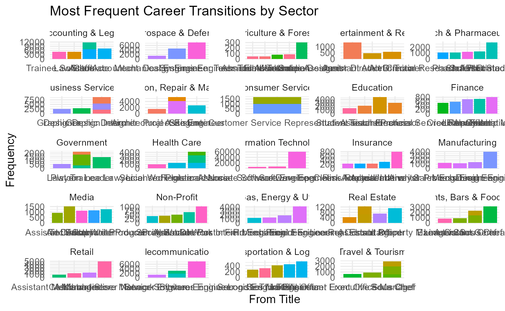

Analyzing Career Mobility in the CMap Dataset: Practical Examples
Source:vignettes/exploring_career_mobility.Rmd
exploring_career_mobility.RmdAnalyzing Career Mobility in the CMap Dataset: Practical Examples
This vignette provides hands-on examples for analyzing job specialization, title mapping, and promotion networks using the cmapr package and the CMap Career Mobility Dataset.
The examples are designed to help you efficiently explore and visualize the data, leveraging tidyverse tools for clarity and reproducibility.
1. Loading and Inspecting Specialization Data
The specialization index (SI) quantifies how distinctive a job title is within its sector.
si_data <- load_sector_specialization(file.path(dataset_dir, "titles/si"))
si_data %>%
group_by(sector) %>%
arrange(desc(si)) %>%
slice_head(n = 10) %>%
select(sector, title, si)
#> # A tibble: 240 × 3
#> # Groups: sector [24]
#> sector title si
#> <chr> <chr> <dbl>
#> 1 Accounting & Legal Assistant General Attorney 0.988
#> 2 Accounting & Legal Audit Senior Assistant 0.976
#> 3 Accounting & Legal Deputy General Attorney 0.967
#> 4 Accounting & Legal Chartered Legal Executive 0.960
#> 5 Accounting & Legal Trainee Advocate 0.960
#> 6 Accounting & Legal Consultant Solicitor 0.957
#> 7 Accounting & Legal Attorney Partner 0.955
#> 8 Accounting & Legal Litigation Partner 0.951
#> 9 Accounting & Legal Real Estates Attorney 0.943
#> 10 Accounting & Legal Accounting Chief Officer 0.943
#> # ℹ 230 more rowsTip:
To find the most specialized roles in a sector, filter by high SI
scores.
si_data %>%
filter(sector == "Information Technology") %>%
arrange(desc(si)) %>%
slice_head(n = 5)
#> # A tibble: 5 × 8
#> sector title frequency weighted_frequency se sd si onet_soc_codes
#> <chr> <chr> <dbl> <dbl> <dbl> <dbl> <dbl> <chr>
#> 1 Informati… Inst… 2234 37.9 1 0.960 0.960 49-2094.00;17…
#> 2 Informati… SAP … 2102 35.7 1 0.958 0.958 NA
#> 3 Informati… Pres… 1106 18.8 1 0.928 0.928 13-1199.00;15…
#> 4 Informati… Acco… 978 16.6 1 0.920 0.920 13-1161.01;13…
#> 5 Informati… Orac… 961 16.3 1 0.919 0.919 13-2054.00;13…2. Mapping and Summarizing Job Titles
The title mapping data helps you understand how raw job titles are standardized and grouped.
title_map <- load_title_map(file.path(dataset_dir, "titles/map"))
title_map %>%
count(sector, title_simplified, sort = TRUE)
#> # A tibble: 418,664 × 3
#> sector title_simplified n
#> <chr> <chr> <int>
#> 1 Business Services Manager 51574
#> 2 Manufacturing Manager 46876
#> 3 Information Technology Manager 37014
#> 4 Retail Manager 35266
#> 5 Finance Manager 25450
#> 6 Oil, Gas, Energy & Utilities Manager 18879
#> 7 Transportation & Logistics Manager 16136
#> 8 Business Services Assistant 15550
#> 9 Health Care Manager 15223
#> 10 Non-Profit Manager 14689
#> # ℹ 418,654 more rowsTip:
Use this mapping to collapse variant job titles and compute sector-level
frequencies.
title_map %>%
group_by(sector, title_simplified) %>%
summarise(total = sum(frequency_simplified, na.rm = TRUE)) %>%
arrange(sector, desc(total))
#> `summarise()` has grouped output by 'sector'. You can override using the
#> `.groups` argument.
#> # A tibble: 418,664 × 3
#> # Groups: sector [24]
#> sector title_simplified total
#> <chr> <chr> <dbl>
#> 1 Accounting & Legal Manager 2092621896
#> 2 Accounting & Legal Assistant 746253906
#> 3 Accounting & Legal Accountant 460474380
#> 4 Accounting & Legal Associate 286909623
#> 5 Accounting & Legal Law Clerk 244412335
#> 6 Accounting & Legal Administrative Assistant 171775190
#> 7 Accounting & Legal Legal Intern 164257104
#> 8 Accounting & Legal Legal Assistant 150953085
#> 9 Accounting & Legal Director 126512640
#> 10 Accounting & Legal Attorney 122948976
#> # ℹ 418,654 more rows3. Exploring Promotion Networks
Promotion networks show observed transitions between job titles, both validated (manually reviewed) and unvalidated (algorithmic).
Validated Promotions
validated_edges <- load_validated_promotions("edges", file.path(dataset_dir, "promotions/validated"))
validated_nodes <- load_validated_promotions("nodes", file.path(dataset_dir, "promotions/validated"))Unvalidated Promotions
unvalidated_edges <- load_unvalidated_promotions("edges", file.path(dataset_dir, "promotions/unvalidated"))
unvalidated_nodes <- load_unvalidated_promotions("nodes", file.path(dataset_dir, "promotions/unvalidated"))Tip:
Investigate the most frequent promotion paths in a sector:
unvalidated_edges %>%
filter(sector == "Healthcare") %>%
arrange(desc(frequency)) %>%
slice_head(n = 5) %>%
select(from, to, frequency, promotion_prob)
#> # A tibble: 0 × 4
#> # ℹ 4 variables: from <chr>, to <chr>, frequency <dbl>, promotion_prob <dbl>4. Visualizing Career Transitions
You can visualize promotion networks interactively (if HTML files are available):
load_validated_promotions("network", file.path(dataset_dir, "promotions/validated"), open_html = "US_finance.html")Or plot a simple summary using ggplot2:
top_edges <- unvalidated_edges %>%
group_by(sector) %>%
arrange(desc(frequency)) %>%
slice_head(n = 5)
ggplot(top_edges, aes(x = reorder(from, frequency), y = frequency, fill = to)) +
geom_col(show.legend = FALSE) +
facet_wrap(~sector, scales = "free") +
labs(title = "Most Frequent Career Transitions by Sector",
x = "From Title",
y = "Frequency") +
theme_minimal(base_size = 12)
5. Further Exploration and Research
Combine
cmaprdata tables with external labor market data for advanced modeling.Use the specialization index to identify emerging or declining roles.
Explore cross-sector mobility patterns to inform workforce development.
References:
These examples provide a foundation for your own research and
exploration of global career mobility.
For more advanced analyses, see additional articles or the package
reference.